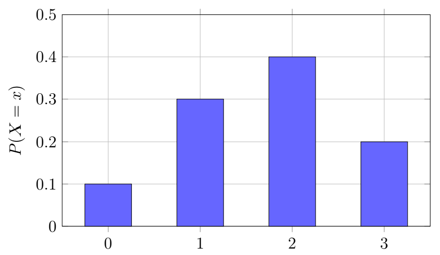
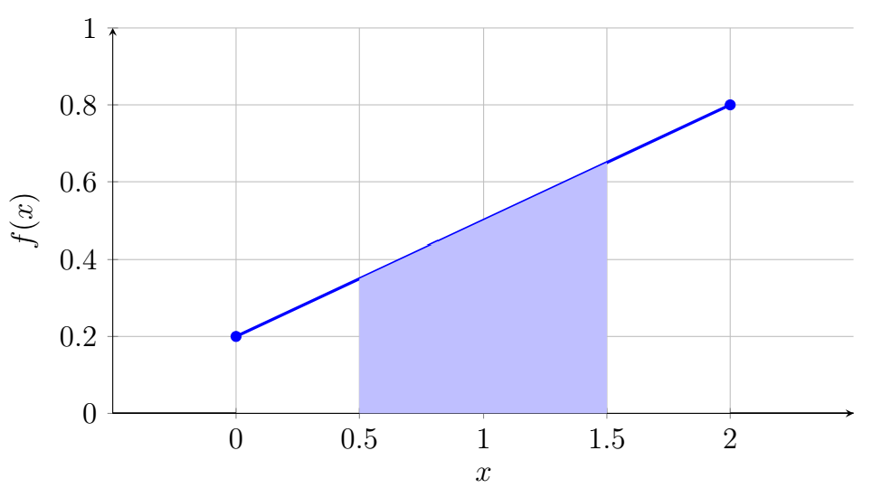

Chapter 2: Binomial Probability Distribution
Section 2.2: Random Variable
Many probability experiments produce numerical outcomes. For example:
- the number of defective products in a sample,
- the number of customers arriving at a store,
- the amount of rainfall in a day,
- the waiting time for a service.
That said, a random variable does not necessarily mean that the original outcome itself is numerical. Flipping a coin is an example. A Head and a Tail might be assigned values of 1 and 0.
Random Variables
Definition: Random Variable
A random variable assigns a numerical value to each outcome of a random experiment. A random variable is a variable whose value is determined by the outcome of a random experiment.
The random variable is usually represented by an uppercase letter such as \(X\) or \(Y\), while a particular value of the random variable is represented by a lowercase letter such as \(x\) or \(y\).
Example 1
Let \(X\) be the number of heads obtained when three coins are flipped. List the possible values of \(X\) and explain why \(X\) is a random variable.
Solution
For example, let
\[X=\text{number of heads obtained when three coins are flipped}.\]The possible values of \(X\) are
\[X=0,1,2,3.\]Because these values are determined by chance, \(X\) is a random variable. Notice that \(X\) is the number of heads, not the outcome of the three coin flips themselves.
Discrete Random Variables
Definition: Discrete Random Variable
A random variable is discrete if its possible values form a finite or countably infinite set.
Discrete random variables typically represent counts.
Examples include:
- number of students absent from a class,
- number of defective items in a shipment,
- number of successes in a fixed number of trials.
A discrete random variable has a probability distribution that lists each possible value and its associated probability.
| \(x\) | \(P(X=x)\) |
|---|---|
| 0 | 0.20 |
| 1 | 0.35 |
| 2 | 0.30 |
| 3 | 0.15 |
For any discrete probability distribution,
\[P(X=x)\geq0\]and
\[\sum P(X=x)=1.\]Before using a table as a probability distribution, verify that every probability is nonnegative and that the probabilities sum to 1.
Continuous Random Variables
Definition: Continuous Random Variable
A random variable is called continuous if it can take any value within an interval of real numbers. Continuous random variables usually represent measurements.
Examples include:
- height,
- weight,
- temperature,
- time,
- distance.
A continuous random variable can take any value within an interval of real numbers.
For example, the time required to complete a task may be
\[ 4.2\text{ minutes},\quad 4.23\text{ minutes},\quad 4.231\text{ minutes}, \]and so on.
Because individual values have probability zero for continuous variables, probabilities are calculated over intervals using probability density functions.
A probability density function gives probability through area; the height of the density curve at a particular point is not itself a probability.
Probability Distributions
Definition: Probability Distribution
A probability distribution describes how probabilities are assigned to the possible values of a random variable.
For a discrete random variable, the probability distribution can be represented by a probability mass function (PMF),
\[P(X=x).\]The probability distribution provides information about the behavior and likelihood of possible outcomes.
Probability Mass Functions and Probability Density Functions
The probability distribution of a random variable describes how probabilities are assigned to its possible values. The form of the distribution depends on whether the random variable is discrete or continuous.
Definition: Probability Mass Function (PMF)
A probability mass function (PMF) is used to describe the probability distribution of a discrete random variable. We think of it as a mass function because all of the probability is collected on certain discrete values.
For a discrete random variable \(X\), the probability mass function is
\[P(X=x),\]which gives the probability that the random variable assumes the value \(x\).
The PMF has the following properties:
- \(P(X=x)\ge0\) for every possible value of \(x\).
- \(\sum P(X=x)=1.\)
- The probability of an event is the sum of the probabilities of all possible values of \(X\) contained in that event.
Example 2
Suppose the probability distribution of \(X\) is shown below. Display this PMF graphically, then find \(P(X=2)\) and \(P(X\le1)\).
| \(x\) | 0 | 1 | 2 | 3 |
|---|---|---|---|---|
| \(P(X=x)\) | 0.10 | 0.30 | 0.40 | 0.20 |
Solution
This PMF can be shown graphically:

We think of it as a mass function because all of the probability is collected on certain discrete values. Notice that all of the probability is on the values \(\{0, 1, 2, 3\}\) and nowhere else.
From this PMF, we can determine
\[P(X=2)=0.40,\]the probability of the value 2.
We can also see that
\[P(X\le1)=0.10+0.30=0.40.\]This gives us all of the probability at and below 1.
Definition: Probability Density Function (PDF)
A probability density function (PDF) is used to describe the probability distribution of a continuous random variable. Unlike a PMF, a PDF does not assign probabilities to individual values.
Instead, probabilities are determined by the area under the density curve.
The probability density function is denoted by
\[f(x).\]A probability density function satisfies the following properties:
- \(f(x)\ge0\) for all values of \(x\).
- The total area under the curve is \[\int_{-\infty}^{\infty} f(x)\,dx=1.\]
- The probability that \(X\) lies between two values is \[P(a\le X\le b)=\int_a^b f(x)\,dx.\]
The symbol \(\int_a^b f(x)\,dx\) is a way of finding the area under the curve between \(a\) and \(b\) on the \(x\)-axis. The integral notation describes the general mathematical definition. In this course, we will find probabilities geometrically when the density function produces familiar shapes such as rectangles and triangles. In later courses, Calculus can be used to find areas of more complex distributions.
Since a continuous random variable can assume infinitely many values,
\[P(X=x)=0\]for every individual value of \(x\).
This result often surprises students. Although the probability of any single value is zero, the probability that the random variable falls within an interval can be positive. For a continuous random variable, probability is associated with intervals or regions rather than individual points.
Example 3
Suppose the continuous random variable \(X\) has probability density function
\[ f(x)= \begin{cases} 0.3x+0.2, & 0\le x\le 2,\\[6pt] 0, & \text{otherwise}. \end{cases} \]Verify that \(f\) is a valid probability density function, then find \(P(0.5<X<1.5)\).
Solution
The PDF can be shown graphically.

We can verify that the function is nonnegative and that the total area under the density curve is 1 by finding the area of the trapezoid:
\[\text{Area}=\frac{1}{2}(b_1+b_2)h=\frac{1}{2}(0.2+0.8)(2)=\frac{1}{2}(1)(2)=1.\]Therefore this is a valid probability density function.
To find the probability of an event, we would need to know the start and stop points. Trying to find
\[P(X=1)\]would give us 0 because the area of the infinitely thin trapezoid would be 0. For a more realistic scenario,
\[P(0.5<X<1.5)\]would look something like this:

Finding the area of the shaded region, we get:
\[P(0.5<X<1.5)=\frac12(b_1+b_2)h=\frac12(0.35+0.65)(1)=\frac12(1)(1)=0.50.\]Notice that \(P(0.5<X<1.5)=P(0.5\leq X\leq 1.5)\) because \(P(X=0.5)=P(X=1.5)=0\). Mathematically, the endpoints do not affect the calculations for a continuous distribution.
This helps explain why we think of probability as a density function for continuous variables; the probability is not collected at individual points but spread thickly or thinly across regions.
Comparing PMFs and PDFs
| Discrete Random Variable (PMF) | Continuous Random Variable (PDF) |
|---|---|
| Uses a probability mass function \(P(X=x)\) | Uses a probability density function \(f(x)\) |
| Probabilities are assigned to individual values | Probabilities for intervals are found from areas under the density curve. |
| Probabilities are added | Probabilities are found from areas under the density curve. |
| \(P(X=x)\) may be greater than zero | \(P(X=x)=0\) for every value of \(x\) |
| \(\displaystyle \sum P(X=x)=1\) | \(\displaystyle \int_{-\infty}^{\infty}f(x)\,dx=1\) |
Mean of a Discrete Random Variable
Definition: Mean (Expected Value)
The mean of a random variable is also called the expected value.
The expected value represents the long-run average value of the random variable after many repetitions of the experiment.
For a discrete random variable,
\[\mu_X=E(X)=\sum xP(X=x)\]where \(x\) represents a possible value of the random variable.
The expected value has the same units as the random variable.
Variance and Standard Deviation
Definition: Variance and Standard Deviation
The variance measures the average squared distance of values from the mean.
For a discrete random variable,
\[\sigma_X^2=\sum (x-\mu_X)^2P(X=x)\]The standard deviation is the square root of the variance:
\[\sigma_X=\sqrt{\sigma_X^2}\]The standard deviation measures the typical distance between observed values and the mean.
An equivalent formula for variance is
\[\sigma_X^2=E(X^2)-[E(X)]^2\]where
\[E(X^2)=\sum x^2P(X=x).\]Variance is measured in squared units, while standard deviation has the same units as the random variable.
Example 4
Consider the probability distribution below. Find the mean, variance, and standard deviation of \(X\).
| \(x\) | 0 | 1 | 2 | 3 |
|---|---|---|---|---|
| \(P(X=x)\) | 0.2 | 0.3 | 0.4 | 0.1 |
Solution
First, find the mean:
\[\mu_X=E(X)=\sum xP(X=x)\] \[\mu_X=0(0.2)+1(0.3)+2(0.4)+3(0.1)=0+0.3+0.8+0.3=1.4.\]Next, compute \(E(X^2)\):
\[E(X^2)=\sum x^2P(X=x)\] \[E(X^2)=0^2(0.2)+1^2(0.3)+2^2(0.4)+3^2(0.1)=0+0.3+1.6+0.9=2.8.\]The variance is
\[\sigma_X^2=E(X^2)-[E(X)]^2=2.8-(1.4)^2=2.8-1.96=0.84.\]Therefore,
\[\sigma_X^2=0.84\]The standard deviation is
\[\sigma_X=\sqrt{0.84}\approx0.9165.\]Therefore,
\[\sigma_X\approx0.917\]Another technique for keeping track of all of these values is to compute these values in a table.
| \(x\) | \(P(X=x)\) | \(xP(X=x)\) | \(x^2P(X=x)\) |
|---|---|---|---|
| 0 | 0.2 | 0.0 | 0.0 |
| 1 | 0.3 | 0.3 | 0.3 |
| 2 | 0.4 | 0.8 | 1.6 |
| 3 | 0.1 | 0.3 | 0.9 |
| Total | 1.0 | 1.4 | 2.8 |
From the table, we can see:
\[\mu_X=1.4\]and
\[E(X^2)=2.8.\]The variance is
\[\sigma_X^2=E(X^2)-[E(X)]^2=2.8-(1.4)^2=0.84.\]The standard deviation is
\[\sigma_X=\sqrt{0.84}\approx0.917.\]Therefore,
\[\sigma_X^2=0.84\]and
\[\sigma_X\approx0.917.\]The expected value of 1.4 means that over many repetitions, the average value of \(X\) would approach 1.4. The standard deviation of approximately 0.917 describes the typical spread of values around the mean.
Linear Combinations of Random Variables
Many statistical models involve combining random variables.
Mean of a Linear Transformation
Suppose
\[Y=aX+b\]where \(a\) and \(b\) are constants.
The mean changes according to
\[E(aX+b)=aE(X)+b\]Therefore,
\[\mu_Y=a\mu_X+b\]Effect on Variance and Standard Deviation
Variance and Standard Deviation of a Linear Transformation
Adding a constant shifts every value by the same amount but does not change the spread.
Therefore,
\[\operatorname{Var}(X+b)=\operatorname{Var}(X)\]Multiplying every value by \(a\) multiplies the standard deviation by \(\lvert a \rvert\) and the variance by \(a^2\):
\[\operatorname{Var}(aX)=a^2\operatorname{Var}(X)\]Thus,
\[\operatorname{Var}(aX+b)=a^2\operatorname{Var}(X)\]The standard deviation becomes
\[\sigma_{aX+b}=|a|\sigma_X\]Combining Two Random Variables
Sums of Random Variables
Suppose
\[Y=X_1+X_2.\]The mean always follows the addition rule:
\[\mu_Y=\mu_1+\mu_2\]This rule holds whether or not the random variables are independent.
For independent random variables,
\[\sigma_Y^2=\sigma_1^2+\sigma_2^2\]and therefore,
\[\sigma_Y=\sqrt{\sigma_1^2+\sigma_2^2}\]More generally, for
\[Y=aX_1+bX_2,\]the variance is
\[\operatorname{Var}(Y)=a^2\operatorname{Var}(X_1)+b^2\operatorname{Var}(X_2)\]when \(X_1\) and \(X_2\) are independent.
If \(X_1\) and \(X_2\) are not independent, an additional covariance term is required. That topic is beyond the scope of this chapter.
Example 5
Suppose \(X\) and \(Y\) are independent discrete random variables with
\[\mu_X=4,\qquad \sigma_X=1.5\]and
\[\mu_Y=6,\qquad \sigma_Y=2.\]Let
\[Z=3X+2Y-5.\]Find the mean, variance, and standard deviation of \(Z\).
Solution
For a linear combination of random variables,
\[Z=aX+bY+c,\]the mean is
\[\mu_Z=a\mu_X+b\mu_Y+c.\]Substituting the given values,
\[\mu_Z=3(4)+2(6)-5=12+12-5=19.\]Therefore,
\[\mu_Z=19\]For independent random variables, the variance of a linear combination is
\[\sigma_Z^2=a^2\sigma_X^2+b^2\sigma_Y^2.\]Since
\[\sigma_X^2=(1.5)^2=2.25\]and
\[\sigma_Y^2=(2)^2=4,\]we have
\[\sigma_Z^2=3^2(2.25)+2^2(4)=9(2.25)+4(4)=20.25+16=36.25.\]Therefore,
\[\sigma_Z^2=36.25\]The standard deviation is
\[\sigma_Z=\sqrt{36.25}\approx6.021.\]Therefore,
\[\sigma_Z\approx6.021\]Thus, \(Z\) has an expected value of 19 and a standard deviation of approximately 6.021.
Key Ideas
A random variable assigns numerical values to outcomes of a random experiment.
- Discrete random variables have countable possible values.
- Continuous random variables can take any value in an interval.
For a discrete random variable:
\[\mu_X=E(X)=\sum xP(X=x)\] \[\sigma_X^2=\sum(x-\mu_X)^2P(X=x)\] \[\sigma_X=\sqrt{\sigma_X^2}\]For linear transformations:
\[E(aX+b)=aE(X)+b\] \[\operatorname{Var}(aX+b)=a^2\operatorname{Var}(X)\] \[\sigma_{aX+b}=|a|\sigma_X\]For independent random variables:
\[\operatorname{Var}(X+Y)=\operatorname{Var}(X)+\operatorname{Var}(Y).\]